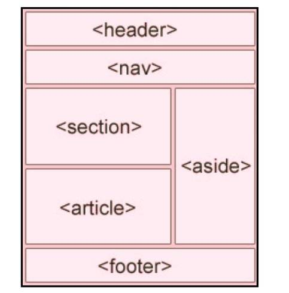

Benefits of SEO :
Using HTML semantic tags can greatly benefit both your websites's SEO and maintainability of your code. They
offer a way to structure your HTML in a meaningful manner, making your website more accessible and easier to
understand.
What are Semantic tags?

semantic tags are useful in SEO-Search Engine Optimisation.
Here are some Semantic tags uses.